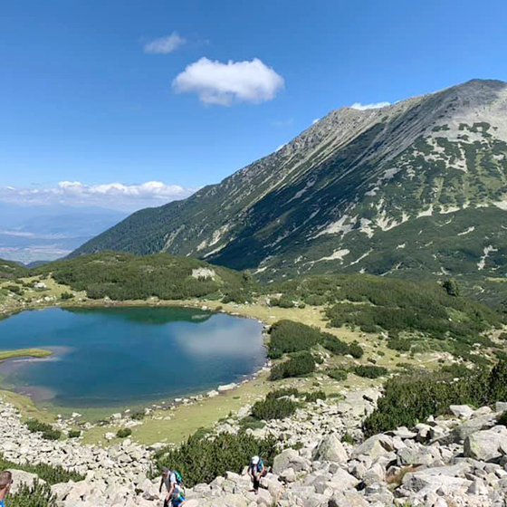

Планинарството, иначе известно като планинско катерене, е много популярен спорт на открито. В света има хиляди планини, всички със своя уникален терен, собствени предизвикателства и вълнения.
Произход на алпинизма: Планинарството съществува отдавна, въпреки че като хоби се практикува от по-скоро. Хората изкачват планините като хоби още от 1336 г. Сър Алфред Уилс изкачва швейцарския Ветърхорн през 1865 г. и това се счита за раждането на алпинизма като спорт.Планинарството е философия за цял живот, а не просто хоби.
За разлика от повечето други екстремни спортове, планинарството е уникално подходящ да бъде хоби за цял живот, а не еднократно преживяване-скоковете от високо и скалното гмуркане може да са забавни първите няколко пъти, но всеки път усещането е еднакво. За разлика от това, в планинарството всяка планина е ново изживяване, да не говорим за чувството за постижение от завладяването на всеки нов връх.
Зимно планинарство
Зимното планинарство е по-трудно, по-рисковано и много по-полезно занимание. Повечето хора избират да се изкачват през лятото, така че маршрутите са много по-пусти през зимата. Това може да бъде особено желателно в по-популярните дестинации. По-голямата трудност на терена също повишава удовлетворението и чувството за постижение от триумфалното изкачване. Още едно предимство е, че можете да изберете да изкачите планина, на която да продължите своята ски ваканция.
- |
- |
- |
- |
- |
-